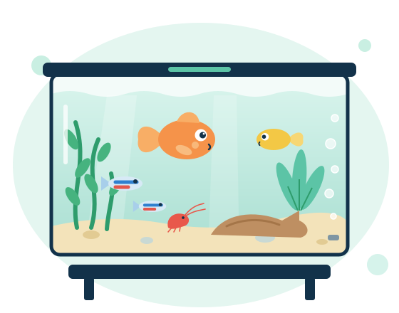

CS2701 · Group B14 · Start-up 1 · SDG 14
AquaBridge team hub
The Sprint 1 front-end prototype, its guided demo flows, the design system and the detailed backlog, in one place.

Start here
Open the prototype
Click through both journeys with sample data.
Open →Walkthrough
Demo flows
Three guided demos: owner, adopter, decision and handover.
Watch →Planning
Sprint 1 backlog
39 tickets with what to build, states and acceptance criteria.
Read →Design
Design system
Coastal Trust colours, type, components and rules.
View →Reference
Screen map
Every screen, its owner, tasks and backlog stories.
View →Tracking
Jira board (KAN)
Team members only. Ask Shawn for an invite.
Open in Jira ↗Everything here uses sample data. Guidance and compatibility results are illustrative examples, not legal or biological advice.